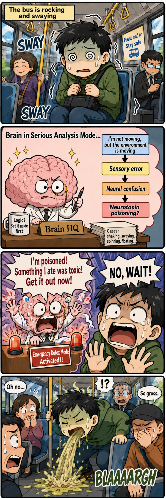

EPISODE 001
Motion Sick Puke
- FORMAT
- 4-panel comic
- READING
- Top to bottom

ORIGINAL COMICS · VOL. 01
Welcome to the inner theater. Scroll down and enjoy this motion-sickness disaster.
EPISODE 001

ANIME VIEWING DIARY
A six-part reaction to Angels of Death, from “this dialogue feels like a game” to “good adaptation.”
Read the review